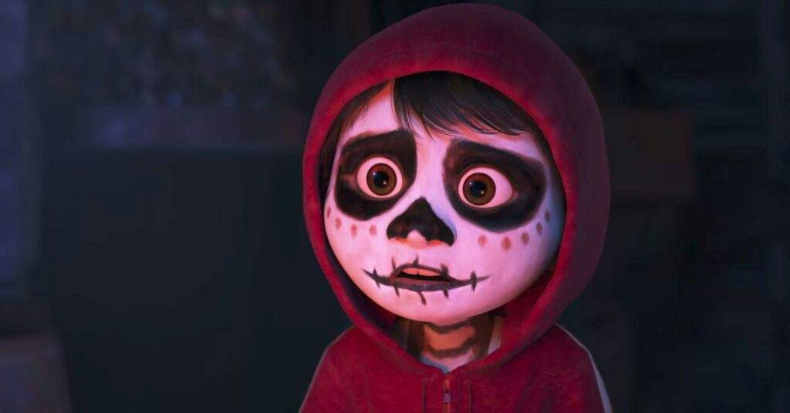

Personaje / Disfraz
Nombre del personaje: Miguel Rivera (Coco)
Descripción breve
Miguel Rivera es el protagonista de la película animada Coco de Disney Pixar. Es un niño mexicano apasionado por la música que sueña con ser músico a pesar de la prohibición familiar. Su historia se desarrolla durante el Día de Muertos, donde viaja al Mundo de los Muertos para descubrir la verdad sobre su familia y su pasión. Su disfraz se inspira en su atuendo característico con sudadera roja, guitarra blanca y maquillaje de calavera.
Categoría del personaje
Fantasía / Cultural mexicano
Detalles del vestuario
- Maquillaje: Pintura blanca en el rostro con detalles negros simulando una calavera, inspirada en el Día de Muertos.
- Accesorios permitidos: Guitarra de utilería blanca (de cartón o plástico), sin cuerdas reales.
- Ropa: Sudadera con capucha roja, camiseta blanca, pantalón de mezclilla azul y zapatos cafés.
- Materiales: Tela, cartón, pintura facial no tóxica, y accesorios ligeros seguros.
Declaración de cumplimiento
Declaro que el vestuario y los accesorios cumplen con las normas de seguridad y respeto: no se utilizarán objetos punzantes, inflamables ni tóxicos. Todos los materiales son seguros y adecuados para el entorno escolar. El maquillaje es hipoalergénico y se retirará fácilmente con agua y jabón. Este disfraz promueve el respeto por las tradiciones mexicanas y la cultura del Día de Muertos.
Firma: OMAR ALEXANDER ÁVILA FONSECA
Imágenes
Fotografía del disfraz de Miguel Rivera:
